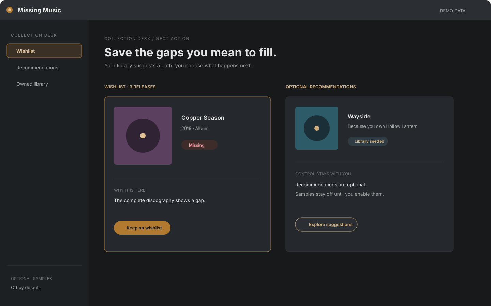

Privacy by default
No account, ads, or analytics. Audio never leaves the machine. Network calls for catalog, covers, or samples are labelled and off until you allow them.
How the collection becomes clear
Scan what you own. Match the MusicBrainz catalog. Investigate gaps and editions at your pace.
Full Pro features on 10 artists · no account, ads, or subscription. Verify SHA-256

01 · Start with what you own
Choose your music folders. Missing Music reads them; your files stay untouched.
Your files remain the source of truth. Library data stays on your PC.
02 · Build the complete picture
Matching fills in each artist’s catalog: albums, EPs, singles, past, and upcoming releases.
Albums · EPs · singles · past releases · upcoming releases
03 · See the gap
See owned, missing, upcoming, and Wishlist releases at a glance. Act on the gaps that matter.
Illustrative discography
04 · Investigate editions and Reports
Compare editions track by track. Two reports other tools skip:


05 · Choose what to pursue
Save missing releases to your Wishlist. Recommendations and samples are optional. Missing Music never acquires files.

Missing Music sits in the middle of a collection you already run. It does not retag. It does not fetch audio.
MusicBrainz Picard is the tagging tool we recommend. Point it at the folders first if the tags are messy. Missing Music does not require Picard. Messy tags still scan; cleaner tags make matching more trustworthy.
Missing Music scans those folders, matches the artists you own, and shows the gaps, editions, and extra tracks.
Buy or rip the releases you mean to own. How you acquire them is yours. Missing Music never downloads a file and does not recommend a grabber.
These are things the app actually does. They are not a WCAG or security certificate.
No account, ads, or analytics. Audio never leaves the machine. Network calls for catalog, covers, or samples are labelled and off until you allow them.
Visible focus, screen readers, reduced motion, forced colours, and status that is not colour-only.
Official installers are only on GitHub Releases, with a SHA-256 file. The app also uses a narrow file scope, CSP, provider allowlists, paced calls, and local crash data.
Official installers ship only from the GitHub Releases page, with a SHA256SUMS file. Early builds are unsigned on purpose. A code-signing certificate comes after revenue, not before.
Get-FileHash -Algorithm SHA256 ".\Missing Music_x.y.z_x64-setup.exe". Compare it with SHA256SUMS.Full Pro features on 10 artists · no account, ads, or subscription.